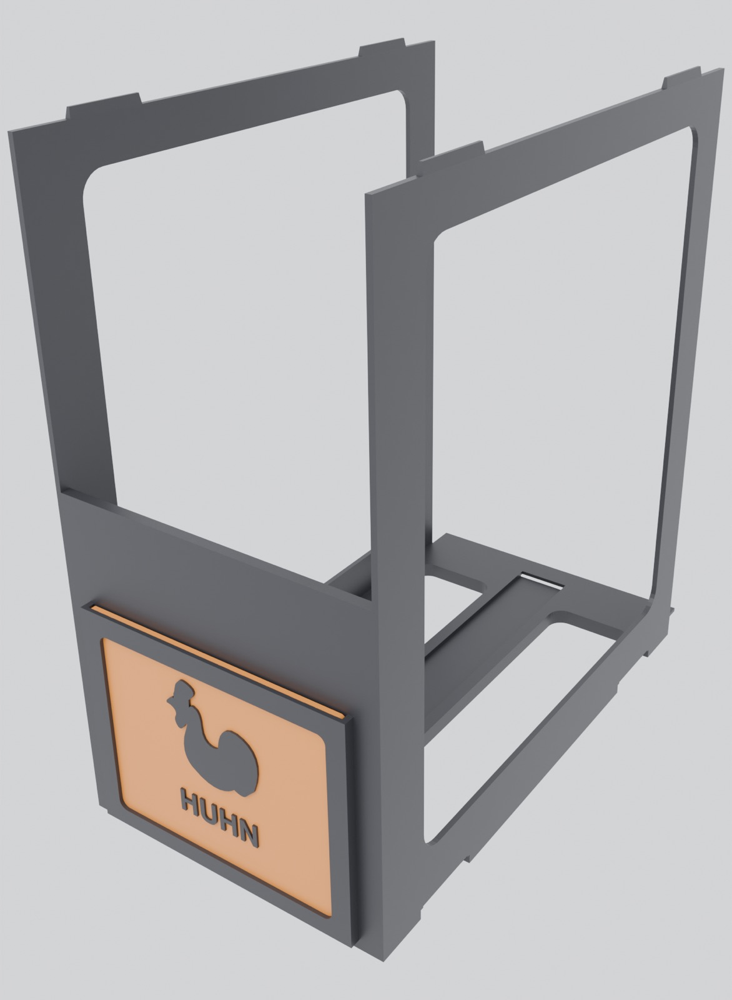
1× je Kanal
Frontsegment
95 × 175 × 185 mm · 112 g
Kommt nach vorne. Trägt die 92 mm hohe Frontwand, die Schildtasche und den Haken für das Federband.
Dokument 1
Von der Passprobe bis zum befüllten Regal. Alle Teile, alle Maße, alle Handgriffe.
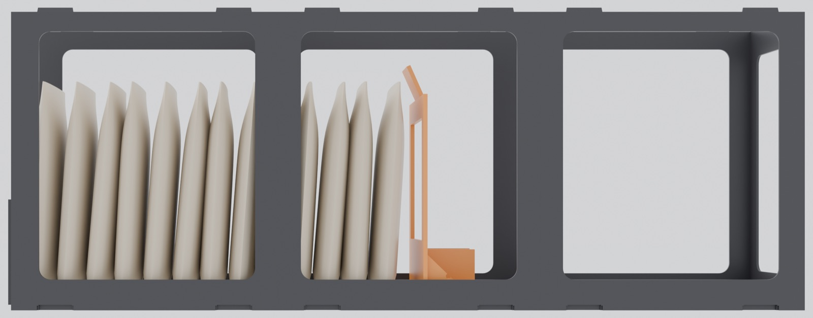
Gefasst wird der Beutel an seiner Oberkante: Daumen und Zeigefinger greifen dort zu und ziehen ihn nach vorne heraus. Der vorderste Beutel ragt 44 mm über die Frontwand hinaus und kippt beim Herausziehen über deren Kante.
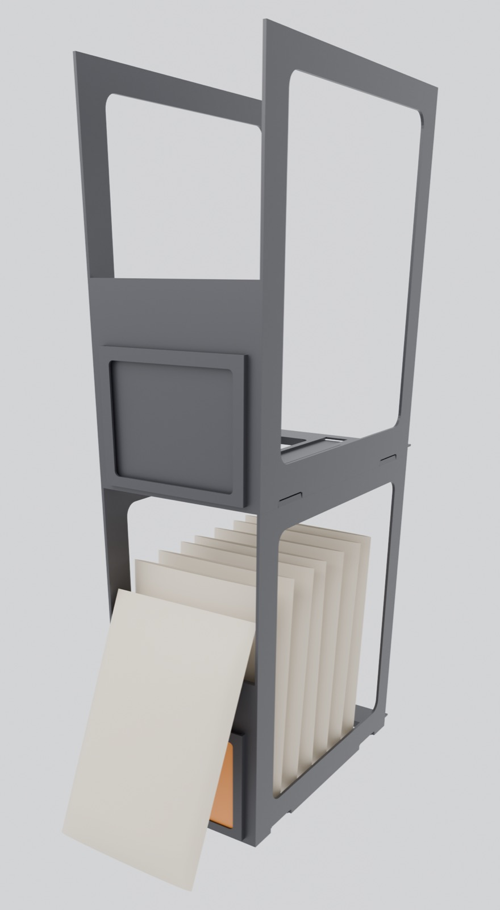
Das entscheidet ein einziges Maß: der Greifraum von 42 mm zwischen der Beutelkante und dem Boden der Ebene darüber. Ein Erwachsenenfinger ist rund 17,5 mm dick, zwei davon passen also neben die Kante. Unter 40 mm wird es zur Fummelei — deshalb ist der Regalboden höher gesetzt, damit 550 mm Fachhöhe zur Verfügung stehen.
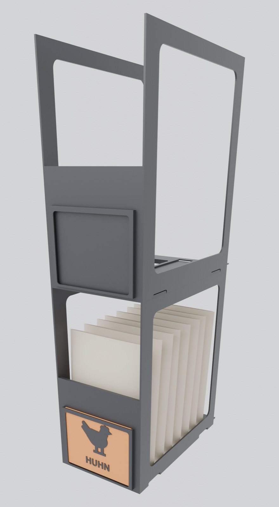
Vorne ist der Kanal oberhalb der Frontwand ohnehin offen — dort steht nichts im Weg. Die Frontwand braucht deshalb keine Griffmulde; eine solche säße dort, wo die Hand gar nicht hinfasst, und nähme nur dem Schild Platz weg.
Seitlich neben den Beutel kommt man nicht: dort sind nur zwei Millimeter Luft, und der Nachbarkanal steht unmittelbar daneben.
Schieber an der Grifflasche nach hinten ziehen, Beutel hochkant von oben einstellen, Schieber loslassen. Die Feder drückt den Stapel wieder nach vorne.
Schild aus der Tasche an der Frontwand ziehen, neues einschieben.
Das ganze System steht und fällt mit der Beutelbreite. Gemessen sind 88 mm, daraus ergibt sich die Spaltenbreite von 95,2 mm und damit fünf Spalten in 540 mm Schrankbreite.
Drucke zuerst probe.stl — 34 g, gut eine halbe Stunde. Das
Innenmaß ist eingeprägt. Stell einen echten Beutel hinein: Passt er mit ein, zwei
Millimetern Luft, stimmen alle weiteren Maße.
Die zweite offene Frage ist die Reibung: Ob sich sechzehn aneinanderlehnende Beutel sauber schieben lassen, hängt an der Folienoberfläche. Bau deshalb erst einen kurzen Kanal aus Front- und Endsegment — 325 mm, 16 Beutel. Funktioniert der, kannst du die Serie starten.
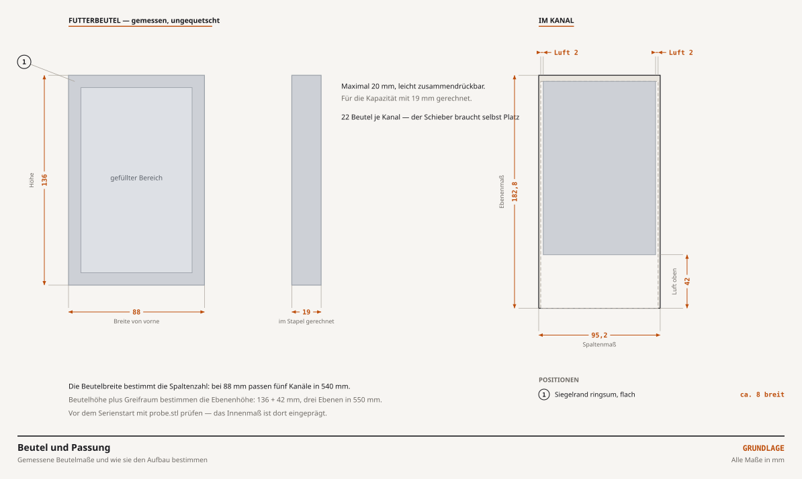
Sieben Teiletypen. Die Mengen gelten je Kanal — und ein Kanal ist eine Sorte.
unten, mitte, oben)
mal drei Spaltenlagen (links, mitte,
rechts). Zusammen 27 Varianten unter
stl/segmente/. Die Bilder zeigen jeweils die Mittellage —
die Variante mit allen Merkmalen. Was an welchem Rand entfällt, steht
weiter unten unter „Zusammenbauen“.
Kommt nach vorne. Trägt die 92 mm hohe Frontwand, die Schildtasche und den Haken für das Federband.
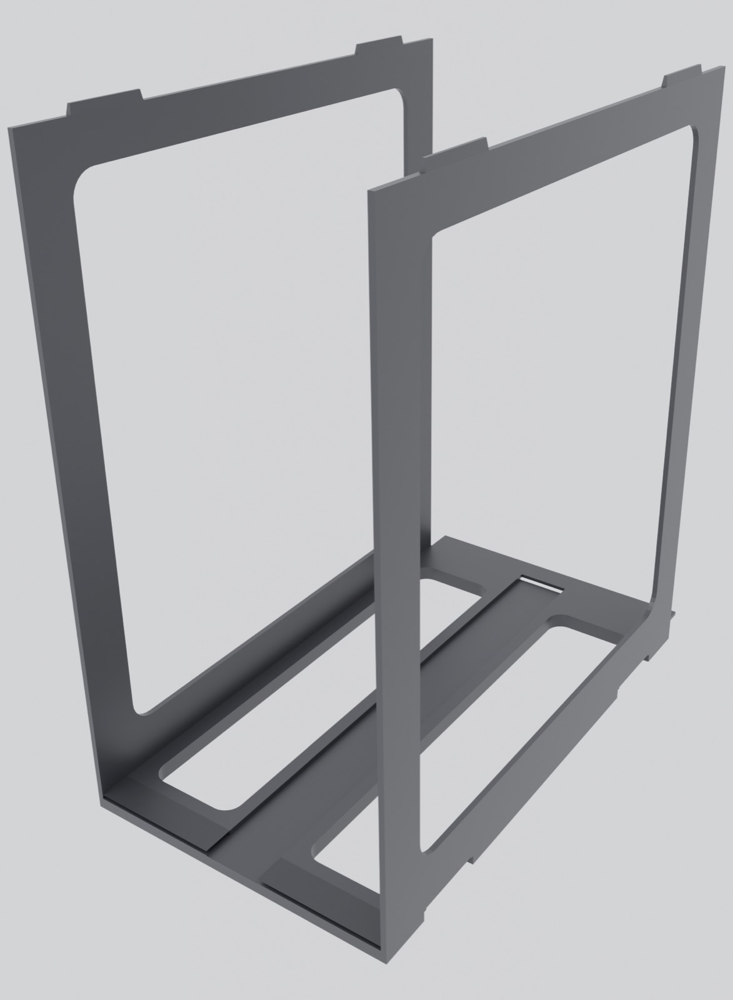
Beidseitig offen. Jedes Stück verlängert den Kanal um 160 mm, also um acht Beutel.
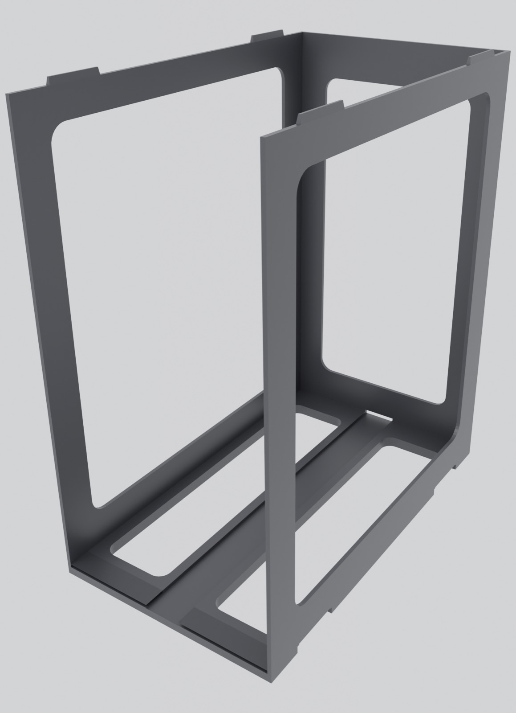
Schließt hinten ab. Durch den Sichtschlitz siehst du, ob noch Vorrat im Kanal ist.
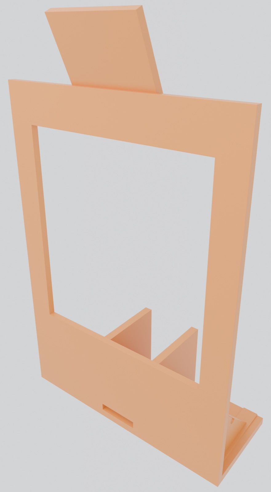
Im Fuß sitzt die Kammer für die Federrolle. Unten Gleitkufen, oben die Grifflasche zum Zurückziehen.
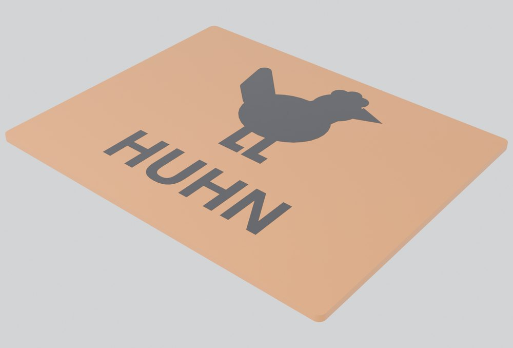
Orange Platte, Schrift 0,6 mm vertieft. Mit zwei Farben zusätzlich
schild-text.stl in Schwarz drucken und einkleben.
Darauf wickelt die Feder. Sie darf nicht auf der 3-mm-Achse laufen — zu enger Wickel, zu hohe Biegespannung im Band. Liegend drucken, dann wird die Bohrung rund.
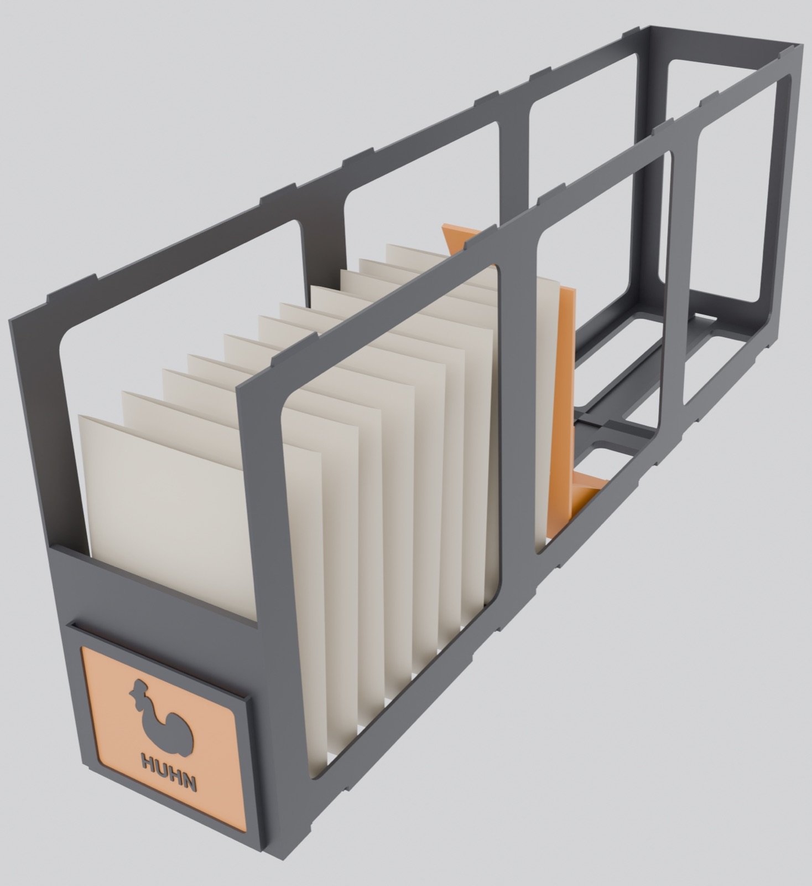
Front + Mitte + End + Schieber + Schild. Eine Sorte mit Platz für 22 Beutel.
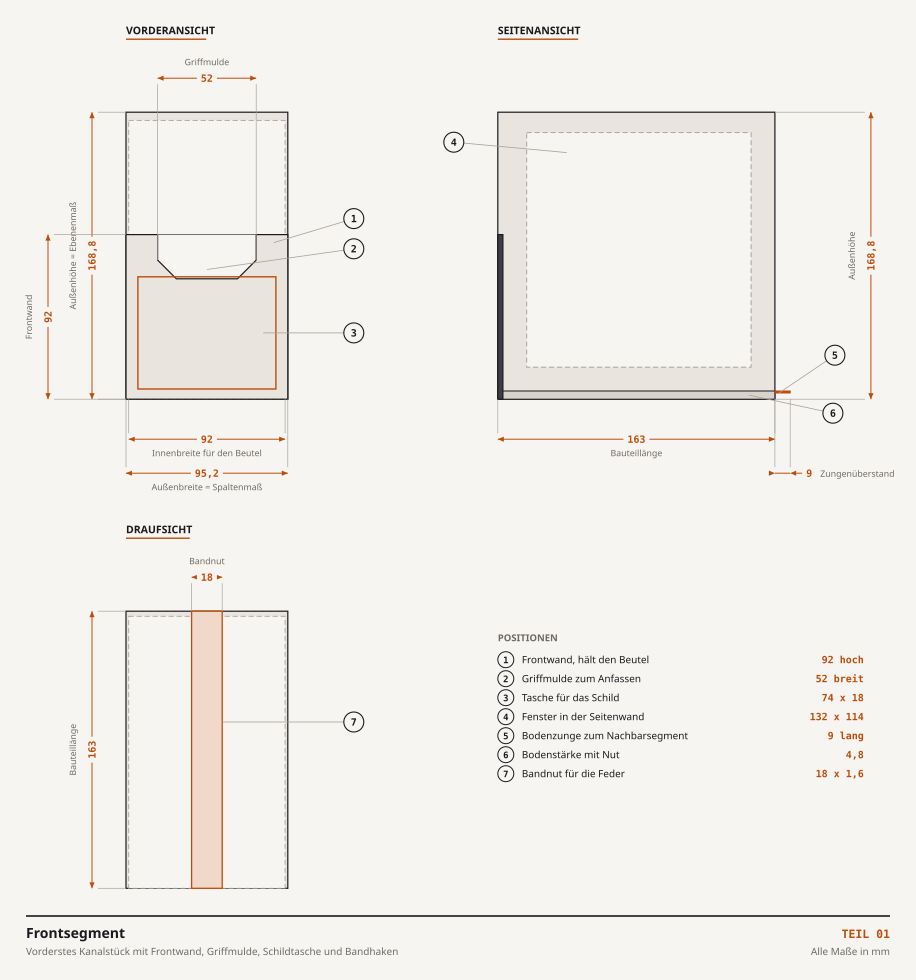
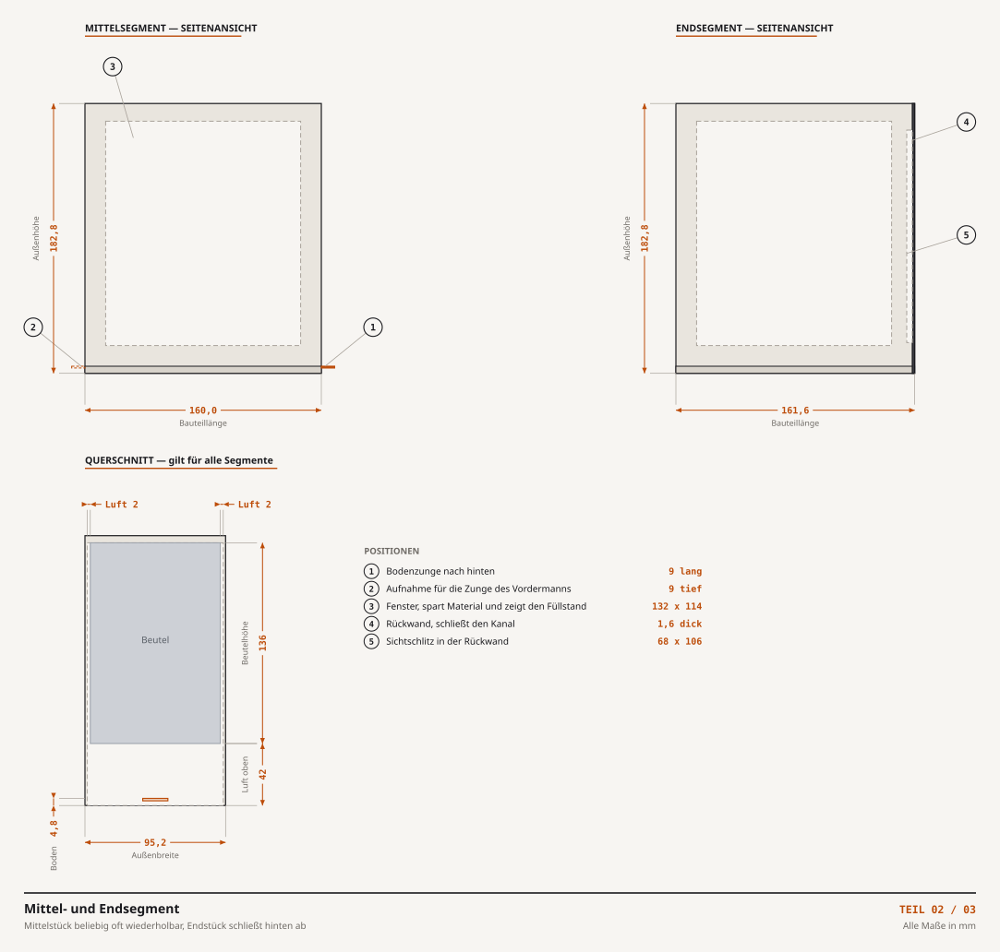
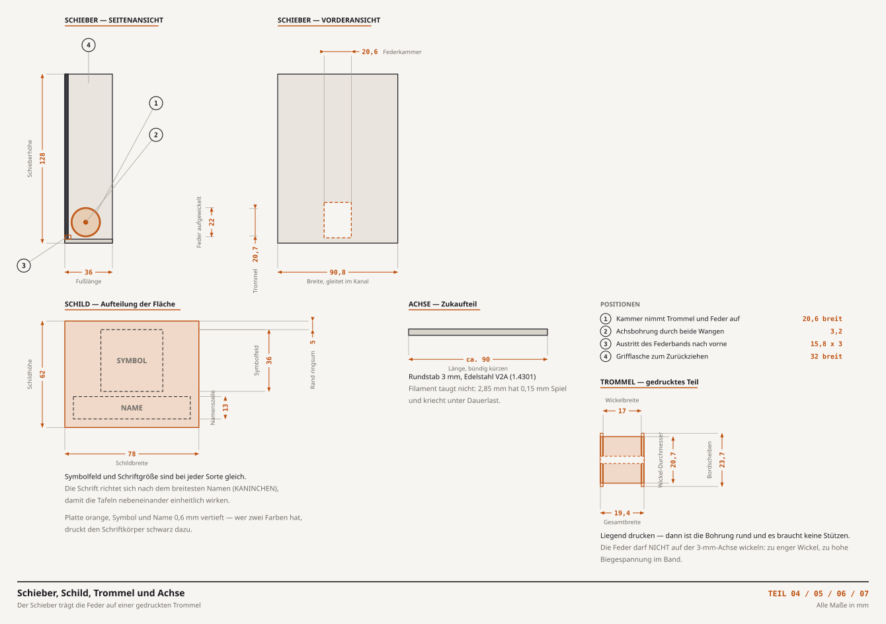
| Kanal | Aufbau | Länge | Beutel | Filament |
|---|---|---|---|---|
| kurz | Front + End | 325 mm | 16 | 263 g |
| mittel | Front + 1× Mitte + End | 485 mm | 25 | 336 g |
| lang | Front + 2× Mitte + End | 645 mm | 33 | 409 g |
In deinen Schrank passt der mittlere Kanal genau.
| Stufe | Sorten | Beutel | Teile | Filament | Druckzeit ca. |
|---|---|---|---|---|---|
| Testkanal, kurz | 1 | 16 | 5 | 263 g | 15 h |
| Eine Ebene | 5 | 125 | 30 | 1,68 kg | 99 h |
| Zwei Ebenen | 10 | 250 | 60 | 3,36 kg | 198 h |
| Drei Ebenen | 15 | 330 | 90 | 5,04 kg | 297 h |
Je Kanal sechs Druckteile: Front-, Mittel- und Endsegment, Schieber, Schild und Wickeltrommel. Druckzeit grob mit 17 g/h. Bei zehn Sorten reichen zwei Ebenen.
Zwei Zukaufteile je Kanal. Keine Schrauben, keine Muttern, kein Kleber — alles Übrige wird gedruckt.
| Teil | Was genau | Menge | Preis |
|---|---|---|---|
| Konstantkraftfeder aufgerolltes Federstahlband |
CF025-0198 · 8,8 N · Auszug 557 mm · Band 12,7 mm · Rolle 15,5 mm · Federstahl 1.4310, rostfrei | 1 je Kanal | 16,20 € |
| Achse trägt die Wickeltrommel |
Rundstab 3 mm, 90 mm lang — Edelstahl V2A (1.4301), blank gezogen, Toleranz h9. Ein 500-mm-Stab reicht für fünf Achsen. | 1 je Kanal | 1,05 € je 500-mm-Stab |
| Material je Kanal | 1 + 1 | ca. 17,25 € |
Die Feder muss zwei Grenzen einhalten. Nach unten begrenzt die Reibung des vollen Stapels: 22 Beutel zu 85 g sind 1,87 kg oder 18,3 N Gewichtskraft; bei einem Reibbeiwert von 0,3 bis 0,4 für Folie auf PLA braucht es 5,5 bis 7,3 N Schub.
Nach oben begrenzt der Beutel selbst. Die volle Federkraft liegt immer auf dem vordersten — egal ob fünf oder fünfundzwanzig dahinterstehen. Zu viel Kraft drückt ihn flach, er weicht seitlich aus und klemmt: Im 92-mm-Kanal hat ein 88-mm-Beutel nur 4 mm Spiel. Platzen droht nicht (8,8 N verteilen sich auf 81 cm² Anlagefläche, rund 1000 Pa — ein Daumendruck ist hundertmal höher), aber die Verformung reicht zum Verklemmen. Praktische Obergrenze: rund 12 N.
Andere Feder? Passend ist alles zwischen 8 und 12 N
mit mindestens 480 mm Auszug. Im Modell sind vier Zeilen zu ändern,
Bandnut, Federkammer und Trommel rechnen sich daraus. pruefen.py
schlägt an, wenn die Feder zu schwach, zu stark oder zu kurz ist.
Deshalb liegt stl/trommel.stl bei: 14,5 mm Wickelfläche,
14,7 mm breit, mit Bordscheiben gegen seitliches Ablaufen, Bohrung 3,5 mm.
Sie läuft frei auf der Achse. Liegend drucken — dann
ist die Bohrung rund und es braucht keine Stützen.
Der Fachbegriff ist entscheidend: Konstantkraftfeder, auch Rollfeder, englisch constant force spring. Dasselbe Bauteil steckt in den Warenschiebern im Supermarktregal.
16,20 € je Kanal sind beim Vollausbau 243 €. Der Listenpreis ist bei allen Größen etwa gleich — ein Kleinmengen-Mindestpreis, kein Materialpreis.
Dieselbe Bauart steckt in Warenpushern für Ladenregale, und das ist Massenware: Ein Warenpusher inklusive Feder kostet bei Sommer International 0,60 € — Faktor 27. Für 15 Kanäle also 9 € statt 243 €.
Bei 0,60 € kostet ein Zehnerpack 6 €: bestellen, messen, entscheiden. Die Kraft misst man ohne Werkzeug — Feder senkrecht an einer Küchenwaage ausziehen, angezeigte Gramm mal 0,00981 ergibt Newton. 750 g entsprechen 7,3 N.
| Einstellung | Wert | Warum |
|---|---|---|
| Düse | 0,4 mm | Standard |
| Schichthöhe | 0,2 mm | Kompromiss aus Zeit und Qualität |
| Wandlinien | 4 | Wandstärke 1,6 mm geht exakt in vier Linien auf |
| Infill | 15 % | die Wände tragen, viel Füllung gibt es nicht |
| Stützen | nein | Überhänge unter 3 %, nur kurze Brücken |
| Ausrichtung | wie modelliert | Boden aufs Bett, nichts drehen |
| Material | PLA | reicht, im Schrank wird nichts warm |
Ein Parameter im Modell steuert alle Steckverbindungen:
passung = 0.2; // Spiel je Flanke in mmBetrifft die Bodenzunge zwischen den Segmenten und die Schildtasche. 0,15 sitzt stramm, 0,20 ist Standard, 0,25 läuft leicht. Einmal mit einem Toleranztest ermitteln und eintragen.
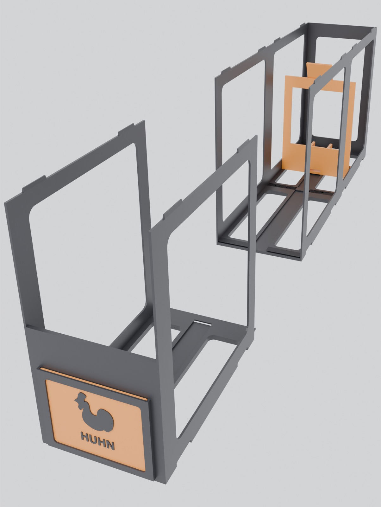
Frontsegment nach vorne, dahinter die Mittelstücke, hinten das Endsegment. Die Bodenzunge schiebt sich unter den Boden des nächsten Teils und überbrückt die Fuge — so bleibt kein Beutel an einer Stufe hängen. Nichts verschrauben: Der Schieberdruck presst die Segmente gegeneinander.
Im Fuß des Schiebers sitzt eine Wanne mit zwei Seitenwänden. Das gekaufte Gehäuse von oben hineinlegen und mit zwei Kabelbindern durch die Querschlitze festzurren. Die Wanne ist bewusst größer als nötig — sie nimmt jedes Gehäuse bis 46 × 30 × 26 mm auf, damit kein Maß stimmen muss.
feder_bauart = "rolle"
ein. Dann entsteht die alte Kammer mit Achsbohrung, und
stl-bauen.py erzeugt zusätzlich
trommel.stl.Das Bandende tritt unten aus dem Schieber aus und läuft in der 15 mm breiten Nut mittig durch den Boden aller Segmente nach vorne.
Im Frontsegment sitzt ein Quersteg in der Bodennut. Bandende dort einhängen — die meisten Federn haben ein Loch im Band. Sonst eines bohren oder mit einem Kabelbinder befestigen.
Schieber nach hinten ziehen und loslassen. Er sollte gleichmäßig nach vorne laufen und an der Frontwand anschlagen.
Von oben in die Tasche an der Frontwand.
Schieber zurückziehen, Beutel hochkant von oben einstellen — alle in derselben Richtung — und loslassen.
In beiden Bodenrändern jedes Segments sitzt dieselbe Tasche. Lege je Segmentfuge einen Verbinder ein und schiebe die nächste Spalte dagegen, bis die Rastnoppe hörbar einschnappt. Zum Lösen genügt kräftiger Zug — werkzeuglos.
An den Randspalten entfällt die äußere
Tasche ganz — dafür gibt es eigene Varianten
(-links und -rechts). So bleibt jede
Außenkante geschlossen, und es fängt sich dort kein Staub.
Auf den Oberkanten der Seitenwände stehen vier Zapfen über, im Boden der nächsten Ebene sitzen die passenden Taschen. Die Ebene von oben aufsetzen, bis sie satt auf den Wänden aufliegt — nicht auf den Zapfen. Kein Sockel, kein Kleber, kein Werkzeug.
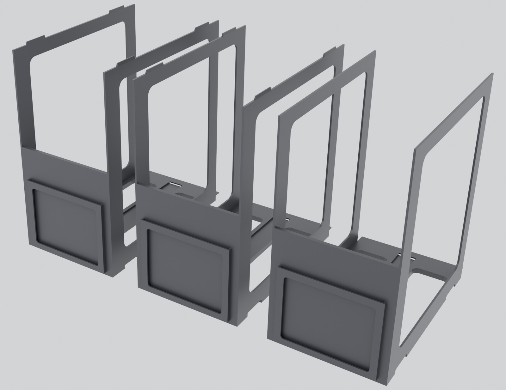
Jedes Segment gibt es in drei Ebenenlagen und drei Spaltenlagen. Mit den drei Tiefenlagen sind das 27 Varianten. Der Dateiname sagt, wohin das Teil gehört — erste Stelle Tiefe, zweite Ebene, dritte Spalte:
segmente/front-unten-links.stl. Welche Variante an welche
Stelle gehört, zeigt Blatt 8 der
Zeichnungen als Positionsplan.Der Vollausbau aus 5 Spalten und 3 Ebenen braucht 45 Segmente; jede der 27 Varianten kommt mindestens einmal vor:
| Variante | Stück | Variante | Stück | Variante | Stück |
|---|---|---|---|---|---|
front-unten-links | 1 × | mitte-unten-links | 1 × | end-unten-links | 1 × |
front-unten-mitte | 3 × | mitte-unten-mitte | 3 × | end-unten-mitte | 3 × |
front-unten-rechts | 1 × | mitte-unten-rechts | 1 × | end-unten-rechts | 1 × |
front-mitte-links | 1 × | mitte-mitte-links | 1 × | end-mitte-links | 1 × |
front-mitte-mitte | 3 × | mitte-mitte-mitte | 3 × | end-mitte-mitte | 3 × |
front-mitte-rechts | 1 × | mitte-mitte-rechts | 1 × | end-mitte-rechts | 1 × |
front-oben-links | 1 × | mitte-oben-links | 1 × | end-oben-links | 1 × |
front-oben-mitte | 3 × | mitte-oben-mitte | 3 × | end-oben-mitte | 3 × |
front-oben-rechts | 1 × | mitte-oben-rechts | 1 × | end-oben-rechts | 1 × |
stl-bauen.py gibt dieselbe Liste am Ende
seines Laufs aus — so laufen Druckliste und Dateibestand nicht
auseinander.
Jedes Segment gibt es in drei Ebenenlagen: unten ohne
Taschen im Boden, mitte mit beidem, oben ohne
Zapfen. Für die oberste Lage also die -oben--Dateien nehmen
— dann schließt der Stapel glatt ab und es steht nichts frei nach
oben. Ebenso gibt es links, mitte und
rechts für die Spalten: an den Außenkanten entfällt die
Verbindertasche, die dort ins Leere zeigen würde.
Zwei Steckverbindungen, beide ohne Zusatzteile.
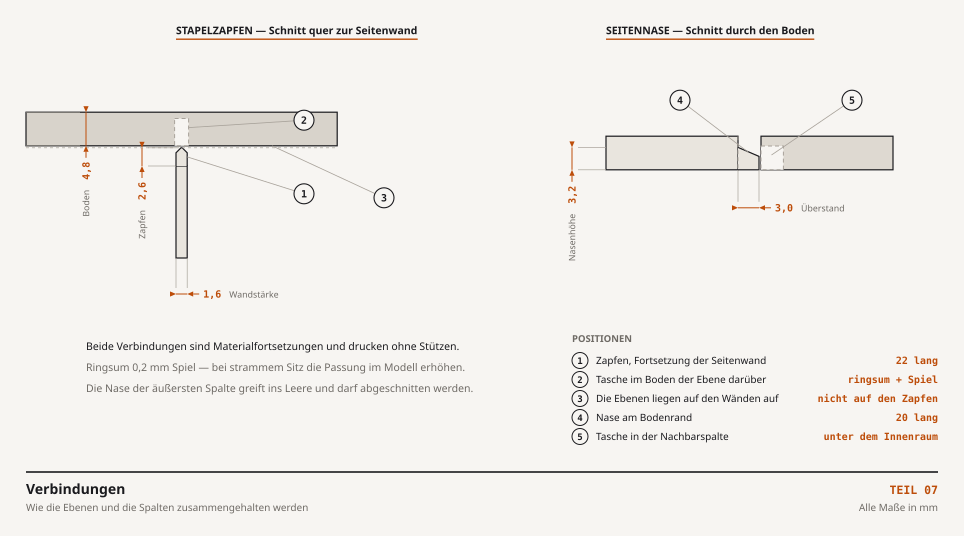
Beim Herausziehen eines Beutels wirkt eine Kraft nach vorne. Ohne Verbindung würde sich der Stapel mit der Zeit verschieben. Deshalb greifen die Teile ineinander:
passung auf 0,25 erhöhen und die Segmente neu
bauen — sitzt es zu locker, auf 0,15 verringern.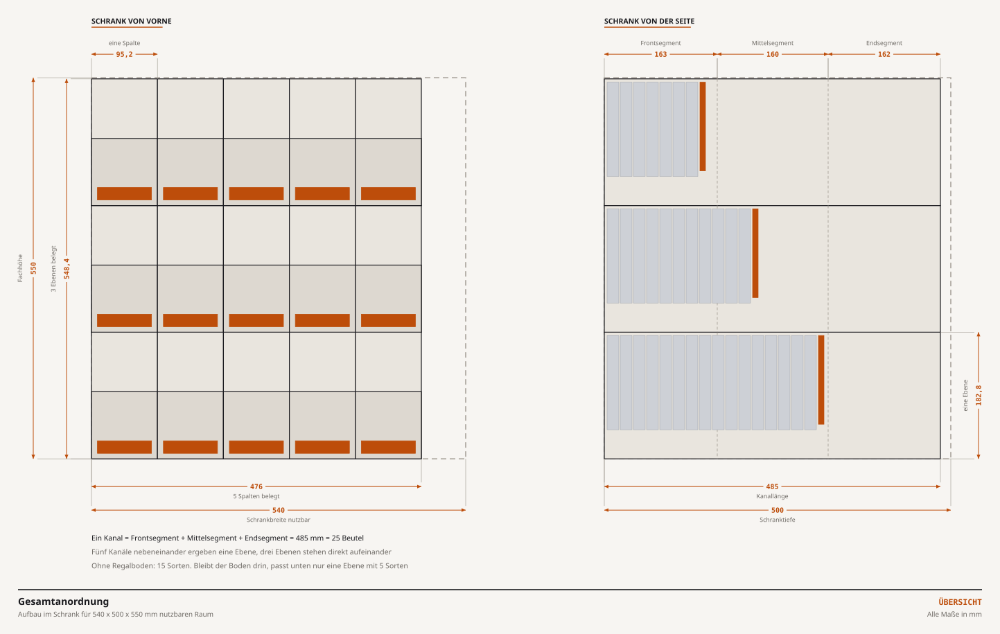
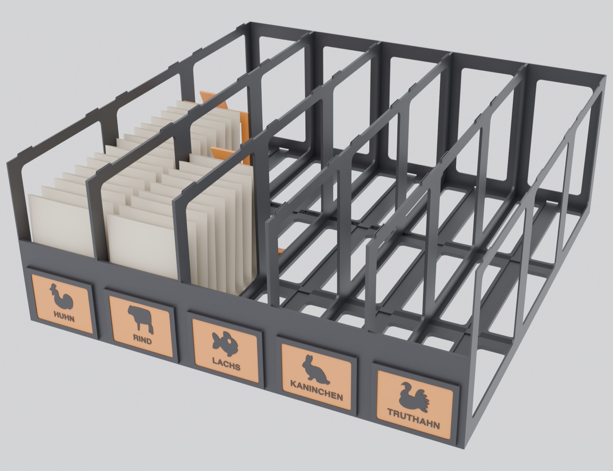
Meist ist die Feder zu schwach — rechne mit 0,25 N je Beutel. Zweite Möglichkeit: Ein Beutel steht quer. Durch die Seitenfenster siehst du, wo es hakt.
Die Bodenzunge sitzt nicht sauber unter dem nächsten Segment. Segmente fest
zusammenschieben, notfalls passung auf 0,25 erhöhen.
Die Achse steht seitlich über und schleift. Bündig kürzen.
Sollte nicht passieren, die Frontwand ist mit 92 mm hoch genug. Falls doch: Feder ist zu stark.